Australian Government Property Register
The Australian Government Property Register (AGPR) (formerly GLAMS) incorporates two data sets:
- Leased Estate – which is the former GLAMS dataset; and
- Owned Estate – which is a dataset of Commonwealth owned land.
The AGPR also has a Property Marketplace which advertises vacant workspace and surplus land. This user guide covers all three sections of the AGPR application.
Requesting Access
The AGPR is an Australian Government business application. All users must be authenticated prior to an account being set up.
To request user access, an email from an Executive Level 2 officer (at minimum) is to be sent to the propertydata@finance.gov.au group mailbox.
The requestor is responsible for ensuring that only those personnel that have a need to know, are given access to the AGPR application. Where there is an agency staffing change, entities are to inform Finance as soon as practicable.
Access to the AGPR will be granted to all users for a 12-month period (period starts from initial request) and user audits will occur every 6 months. If a user does not reply to an audit request, their account will be suspended and the user will need to request an account unlock by emailing propertydata@finance.gov.au.
In accordance with the relevant Information Security Manual control, no shared use non-specific accounts will be created, e.g. user name is a group mailbox - property@entity.gov.au. A draft request email is provided below for your use:
To: propertydata@finance.gov.au
Subject Line: AGPR User access request for [insert First/Last name] - [insert entity full title]
To the AGPR Administrator,
I am requesting AGPR user access be provided to [First/Last name].
[First name] is the [insert role in organisation] for [insert entity name] and I confirm that AGPR access is required for him/her to conduct their duties within this organisation.
[First name] details are below:
- First and last name:
- Organisational email address:
- Branch/Section details:
- Contact details: (incl work phone and work mobile as applicable)
Regards
[insert requestor's signature block]
Getting Started
Step 1: Account Activation
Before logging into your AGPR account for the first time, you will be required to activate your account and create a password. To do this, follow the instructions below:
- Open the automatic activation email sent to you from the Department of Finance.
- Click on the ‘Activate Account’ link in the email, as shown in screenshot 1 below.
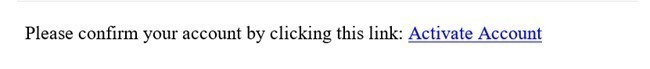 Screenshot 1 - Enter your email address and create a new password - the password you create needs to be unique (Min complex 10 characters – combination of capital letters and alpha numeric). Click ‘Submit’.
- If the email address entered is incorrect or the passwords don't match, the account will not be activated and an error message will be displayed on your screen.
- If you have been able to activate your account successfully, you should see a message confirming activation of your account and will be prompted to log in as shown in screenshot 2 below.
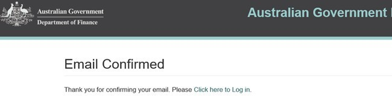 Screenshot 2
Step 2: Login
- Click on the log in link shown in screenshot 2 above or navigate to https://dofagprapp-prod.azurewebsites.net/
-
Enter your email address and password and click on the 'Sign in' button to log into your AGPR account.
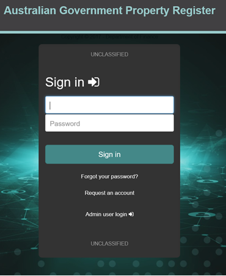 Screenshot 3 -
If you have been able to successfully log on, you should be presented with the option of accessing the data set(s) that you have been granted access to. Depending on your level of access, you may be able to view either ‘Leased estate’ or ‘Owned estate’ or both as shown in screenshot 4 below.
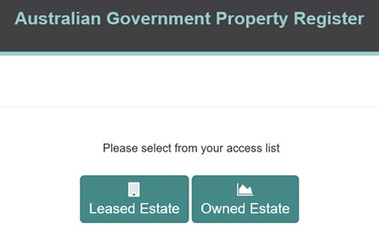 Screenshot 4 -
Click on the service that you wish to access. The 'Important notice to all AGPR users' pop-up will be displayed. Read and click the 'Continue' button to proceed.
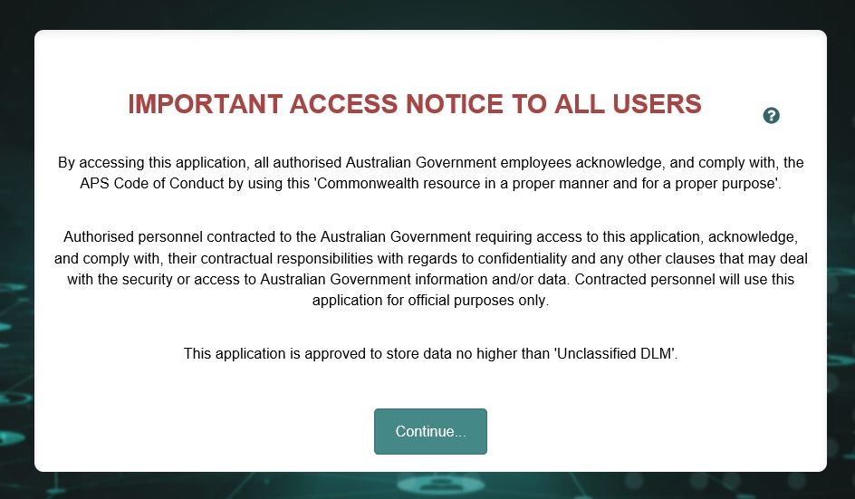 Screenshot 5 -
You are now using the AGPR.
Reset password
- If you have forgotten your password, you may reset it from the AGPR log in screen.
- To do this, click on the 'Forgot your password?' link located below the 'Sign in' button.
- Enter your email address and click the 'Reset your password' button.
- You will receive a password reset confirmation as shown in screenshot 6 below, which will prompt you to check your email for further details.
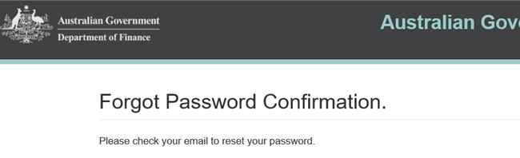
Screenshot 6 - Open the automatic password reset email sent to you from the Department of Finance.
- Click on the ‘reset password’ link in the email as shown in screenshot 7 below.
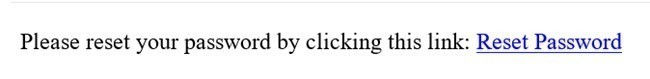
Screenshot 7 - Enter your email address and create a new password - the password you create needs to be unique (Min complex 10 characters – combination of capital letters and alpha numeric). Click ‘Reset’.
- If you have been able to reset your password successfully, you should see a confirmation message on your screen and will be prompted to log in as shown in screenshot 8 below.
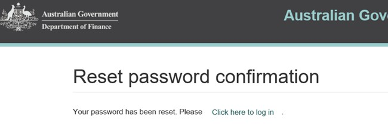
Screenshot 8 - Click on the log in link as shown in screenshot 8 above or navigate to https://dofagprapp-prod.azurewebsites.net/
Leased Estate User Guide
Leased Estate User Interface
Once logged into Leased Estate, you will see a screen similar to the one shown in screenshot 5 above. The following instructions will assist you in familiarising yourself with the user interface.
-
Banner – the top part of the screen displays the department and system information in the banner. The various components of the banner are described below:
- The 'Data collection' icon can be used to access the system data. This is also the default landing screen upon login.
- The Power BI reporting component can be accessed by clicking on the 'Reporting' icon.
- The 'Profile' icon located in the top right hand corner of the banner can be used access the user guide and training videos and also sign out of the system.
-
Main Screen Area – the various components of the main screen area are described below:
- The table menu contains the data tabs; you can navigate between the tabs by clicking on them at any time.
- You can use the 'Search' box to look for particular records or to narrow down the result set by providing appropriate keywords.
- All records are displayed in the table in this section.
- You can change the number of records that are displayed in the table by dropping down the 'Show entries' box and selecting a number from the drop down box. You can check the total number of records displayed on a page in the bottom right hand corner of the screen.
Using the Buildings Tab
A video on how to edit building details can be viewed here
The buildings tab allows you to view, edit or delete building details. You can navigate to the Buildings tab from the Data collection screen.
- To locate a building record that you wish to view or edit, you can use the search bar. You can provide keywords for any columns in the table to search for a particular record.
- You can also browse more entries by moving through pages.
- Once you find the building you wish to view or edit, click on the edit icon 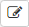
- This will display the building details. There are two tabs with only one tab that you may enter information in:
- Edit building details with your changes and click the 'Save' button.
- If you are only viewing a building's details, click 'Delete' Back to Agency 'OK' to return to the home page.
- To delete a building, you will need to contact the AGPR Administrator.
Create A New Building Request
To request the creation of a new building record:
- Click on the ‘New Building Request’ button.
- In the ‘Search Address’ field, enter the address details of the building you wish to create a building creation request for. As you type, address suggestions will appear below the field. Click on the address suggestion that matches with the address of your building.
- After clicking on the suggested address, a number of data fields will become automatically populated. However, for fields such as ‘Building Name’ and other building details, manually enter the building information required.
- Once finished, click on the ‘Save’ button located at the bottom right of the page to submit the request. The request will then be sent to an AGPR Administrator’s ‘Agency building requests’ inbox. Once processed, the requestor will be notified by an email sent from propertydata@finance.gov.au, when the building request has been processed.
- The user should then log into the AGPR if not already and check that the building record exists.
- If no record exists, then press ‘F5’ to refresh the page and if that does not work, contact the AGPR Administrator as soon as practicable.
Using the Leases Tab
A video on how to add a new lease record can be viewed here
A video of how to edit an existing lease record can be viewed here
A video of how to edit and set the expiry of an existing lease record can be viewed here
The leases tab allows you to view, edit, or add leases.
-
To view or edit a lease:
- Locate the lease you wish to view or edit. You can view leases for a specific building by selecting the building from the dropdown list of all available buildings. Select a building, then click the magnifying glass icon.
- When you have located the lease you wish to edit, click the 'edit' button to the right of the lease details
- You can now make changes to the lease. There may be multiple tabs and optional sections available for editing.
- When you've finished editing the lease, click the 'Save' button to save the information. Otherwise, click 'Back to agency' to return to the home screen.
-
To add a new lease:
- Click on the 'new Lease' button.
- Select a lease type.
- Enter the lease information, as required.
- If adding a tenancy lease, there are several optional sections.
- To add information in an optional section, click the checkbox next to the section header. This will reveal the section and allow details to be added.
-
To expire a lease:
- Update the lease end date to the correct date.
- Save the lease.
- Set Lease status to 'Expired' and save again.
- Note: By setting a lease to expired the lease will not be rolled forward to a new collection period and will not be accessible to a normal user after that point.
Using the Collection Period Tab
To update the collection period details:
- Click on the 'Collection period' tab whilst on the Data collection screen.
- Enter the required numerical data in the text fields, as required.
- Click the 'Save' button to save the data.
- You should see a green pop-up box with a confirmation message.
Using the Region Costs Tab
A video on how to edit and delete region costs can be viewed here
In the Region cost tab, you can view and edit existing region costs, as well as add new costs. To undertake any of these functions, click on the 'Region costs' tab whilst on the Data collection screen.
-
To view or edit a region cost:
- Browse for the region cost you wish to view.
- You can sort the Region and Security Expenses columns my clicking on the arrows within the column header
- Click on the edit button
- You can view and edit the region cost details on this screen, and click the 'Save' button when you've finished. If you make changes that you do not wish to save, simply click the 'Cancel' button.
-
To add a region cost:
- On the Region costs screen, click on the 'new Region cost' button.
- Enter the region cost details, and click 'Save'.
- Your new region cost should now be added to the list of region costs (note, if there are more than 10 region costs you may have to browse additional pages to find your newly added cost).
-
To delete a region cost:
- Browse for the region cost you wish to view.
- You can sort the Region and Security Expenses columns my clicking on the arrows within the column header
- Click on the delete button 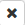
- You will see a prompt asking you to confirm the deletion of the region cost. Click OK to confirm deletion.
Data Management Link (Power BI/Excel download)
Power BI reporting:
To access the reporting section, click on the 'Data Management' link in the Leased Estate banner and then click on the 'Reporting' link.
- Once in the reporting section, you will see a list of reports available to you.
- Click on the name of any report to load the report.
- Once loaded, the reports will show agency specific information and analysis about relative performance of your agency.
- For further guidance on a specific report, refer to the summary page of each report.
Excel download:
An additional Data Exchange link is provided under the Data management link for the Senior Property Advisor (SPA) and Property Service Provider (PSP) roles to download entity property data. By clicking on the link and using the drop down, a SPA can download the complete agency leased estate data set into Excel by collection period. A PSP will only be able to download data for those entities it is responsible for.
Document Search
Official documents associated with all leases for the selected agency can be viewed by clicking on the ‘Documents’ tab on the ‘Data Collection’ page. These documents can include copies of leases and their associated leasing strategies.
To search and view a document:
-
Users can filter the list of documents by using either, or a combination of:
- Lease Identifier – the lease’s AGPR lease id code.
- Building Identifier – the AGPR building id code.
- Document Type – search for all document records that are labelled as a particular type.
- OCR Status – the status of the document’s text extraction.
- Active – whether the document is the current version.
- Search Bar – search for records based on tagged keywords.
-
Once a user locates the document they wish to view, the document can be viewed by clicking on the ‘download’ icon.
How to update search tag keywords for a document:
Tag keywords allow users to search for documents based on labels that describe the content of a document. Users can add tags to search for documents if the OCR process fails or inaccurately scans the document.
To add or edit the tags associated with a particular document:
- Locate the record that you wish to amend.
- Click on the ‘edit’ button.
- Users can add or remove keywords in the ‘Keywords’ comments field.
- Click the ‘Save’ button and a confirmation message of the update will appear on the screen.
- Click ‘Cancel’ to return the previous screen.
How to upload a document:
Documents relating to a lease can be uploaded, stored and accessed in the documents tab of Leased Estate. To upload a document:
- Ensure the document is classified to ‘OFFICIAL’ and has been scanned by an approved antivirus program.
- Navigate to the Leased Estate home page and click on the ‘Leases’ tab.
- Filter records for the particular lease that relates to the document that you wish to upload and click the ‘Edit’ button.
- Click the ‘Documents’ tab and you will be taken to the documents page where all relevant previously uploaded documents will be listed.
- Users can order the list of documents by using either, or a combination of:
- Lease Identifier – the AGPR lease identification code.
- Document Type – search for all document records that are labelled as a particular type.
- OCR Status – the status of the document’s text extraction.
- Active – whether the document is the current version (indicated by a tick in the ‘Active’ column) or the archived version (indicated by a cross).
- File Extension – the format of the document (pdf, excel, jpeg, gif, etc.)
- Version – Whether it is the latest or oldest version of the document.
- Click on the ‘Upload Document’ button.
- Select the document type from the drop down list and then click on ‘Choose File’ to select the document you wish to upload from your computer files.
- Enter any keywords that describe the document that you are using. These keywords can be used to search for this document once uploaded.
- Once finished, click the ‘Upload’. A confirmation message of the upload will appear on the screen if the document was successfully uploaded. A record of the uploaded document will now appear in the document section of the page.
- If a new version of an existing document is being uploaded, the previous version will automatically be archived.
How to archive a document:
Although existing documents are automatically archived upon the upload of a newer version, users have the option to directly archive a document through the UI.
To archive a document:
- Locate the document you wish archive and click the ‘archive’ button.
- A confirmation popup will prompt you to confirm this action. Click the ‘OK’ button to archive the document.
- A confirmation message will appear on the screen if the document was successfully archived.
- Confirm the document has been archived by verifying there is now an x under the active column for that document.
To view an archived document click the ‘versions (toggle)’ button. This will display all previous versions of the selected document.
For a record of all archived documents related to a particular land parcel, click the ‘No’ option in the ‘Active?’ toggle and then click the ‘Search’ button. All archived documents will be displayed. Alternatively, selecting the ‘All’ option on the toggle will display a record of all active and archived documents.
Profile Link
When you are finished using leased estate, it is recommended that you sign out to ensure your account remains secure. To sign out:
- Click on 'Profile' on the right hand side of the banner.
- Click on the 'Sign out' link.
- If you have correctly signed out, you should see the AGPR login window.
Owned Estate User Guide
Owned Estate User Interface
After logging into Owned Estate, you will see a screen similar to the one shown below. 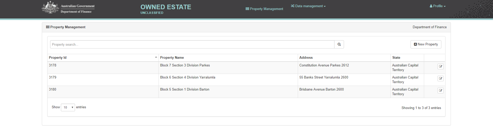
The following instructions will assist you in familiarising yourself with the user interface.
-
Banner – the top part of the screen displays the department and system information in the banner. The various components of the banner are described below:
- The 'Property Management' tab is your entry point for maintaining owned estate data. This is also the default landing screen upon login.
- The Power BI reporting component can be accessed by clicking on the ‘Reporting’ option under the ‘Data Management’ tab.
- The ‘Profile’ tab located in the top right hand corner of the banner can be used to access the user guide, training videos and to also sign out of the system.
-
Main Screen Area > Property Management – the various components of the main screen area are described below.
- All properties captured in the Owned Estate application for your agency are presented in this table.
- You can use the ‘Property Search’ box to look for particular records or to narrow down your search by providing appropriate keywords.
- You can limit or enlarge the number of records displayed in the table by clicking on the ‘Show entries’ drop down and selecting the number of table rows you wish to have displayed.
- You can check the total number of records that are displayed on the page in the bottom right hand corner of the screen.
Maintaining Property Records
A video on how to add a new property can be viewed here
A video on how to edit a property can be viewed here
A property refers to a land holding that an agency owns. A property is typically the common name for a parcel of land represented by a land title. A property can comprise of many neighbouring land parcels. For example; Sydney Airport is a property made up of 35 land parcels identified by their land title Lot 4 DP555771, Lot 12 DP1050464 etc.
From the property management landing page you are able to add, edit or delete properties relating to your agency.
- To find and view a property:
- Enter a set of property details in the search bar – you can enter keywords to search on such as address details, property name or state.
- Click on the ‘Search’ button. A list of properties matching your entered criteria will be displayed.
- To edit a property:
- Locate the property that you wish to edit using the search bar or by manually browsing the table.
- Click on the edit button
- Make the required changes to the property details. Note, instructions on how to maintain the land parcels within a property record is detailed in the section ‘Maintaining Land Parcels’.
- Click on the 'Save' button.
- You should see a green pop-up box with a confirmation message.
- Click on the ‘Cancel' button if you wish to return to property listing.
- To add a property:
- Click on the ‘New Property’ button.
- Enter the necessary details regarding the property that you wish to add into the Owned Estate database. These include the name, street name, suburb and other basic address information.
- Note, the location information (latitude and longitude) are updated by the Finance Property Data team, so you won’t be able to edit these fields.
- Click the ‘Save’ Button.
- You should see a green pop-up box with a confirmation message.
If you find that a record cannot be saved, chances are that not all mandatory fields have been filled out, so check the record for fields that have a red ring around them, fill out the necessary details and save the record again.
Maintaining Land Parcels
A video on how to add a new land parcel can be viewed here
A video on how to edit an existing land parcel can be viewed here
A Land Parcel is the term given to an area of land represented by a land title certificate and issued by a state or territory land title office. It is the smallest legal representation of an area of land in Australia.
All properties must have at least one land parcel allocated to them.
From within a property record you are able to add, edit or delete properties relating to your agency.
- How to add a new land parcel:
- Click the ‘New Land Parcel’ button.
- Enter the necessary details associated with the land parcel that you wish to add to the property. For field specific definitions and requirements, please see the AGPR collection manual.
- Click the ‘Save’ button.
- To add multiple land parcels, this process needs to be repeated for each individual parcel of land.
- How to update a land parcel:
- Within a property record, locate the land parcel you wish to update. This can be done by using the search bar or by manually browsing the table. Note, if no parcels have been added, this table will be empty.
- Click on the edit button
- Make the required changes.
- Click the ‘Save’ button.
Divest, land use and public display - How are these data used?
It is important to understand how the application uses the data provided. Your response to some data fields within a land parcel can drive additional functionality and processes within Government. These include:
-
Suitable for public display – Yes/No buttons?
The Department of Finance maintains a publicly facing list of properties on the Australian Government Property Register. All properties that are recorded as suitable for public display will be shown on this list accessible through Finance’s website, i.e. ‘Suitable for public display’ = Yes -
Is the land surplus to agency requirements – Yes/No buttons? The ‘Current land use’ section collects data to help determine if the parcel of land is surplus to agency requirements. By declaring the land as surplus, Finance will then engage with the agency to consider alternate uses for the land.
-
Divestment
Land parcels that are surplus to an agency’s requirements can be divested to either another commonwealth or state government agency; or to a private sector organisation. When you select that a land parcel has been divested, it will no longer appear in your agency’s data within the Owned Estate application. However, it will remain viewable through the agency reporting function.
Using the ‘Data Management’ link located on the top banner
A reporting link is provided under the Data Management tab.
By clicking on the link and selecting the necessary report that is needed, an Administrator can view Power BI internal and agency Owned Estate reports.
Using ‘Profile’ link located on the top banner
When you are finished using Owned Estate, it is recommended that you sign out to ensure your account remains secure. To sign out:
- Click on 'Profile' on the right hand side of the banner.
- Click on the 'Sign out' link.
- If you have correctly signed out, you should see the AGPR login window.
Document Search
The document search function allows users to search for and upload official documents associated with a parcel. These can include Title Records, Search Certificates, Gazette Notices, Survey Plans, Valuations and any ‘Other’ document types.
The documents for all land parcels owned by the selected agency can be viewed by clicking on the ‘Documents’ tab on the ‘Property Management’ page.
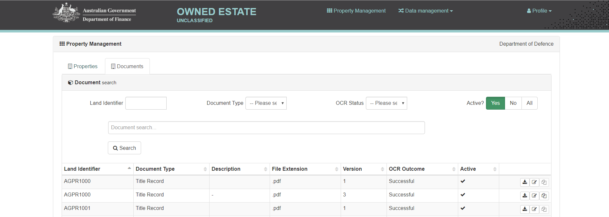
To search and view a document:
- Users can filter the list of documents by using either, or a combination of:
- Land Identifier – the land parcel’s AGPR land id code.
- Document Type – search for all document records that are labelled as a particular type.
- OCR Status – the status of the document’s text extraction.
- Active – whether the document is the current version (“Yes” or a tick) or the archived version (“No”).
- Search Bar – search for records based ozn tagged keywords.
- Once a user locates the document they wish to view, the document can be viewed by clicking on the ‘download’ icon.
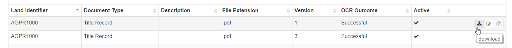
How to update search tag keywords for a document:
Tag keywords allow users to search for documents based on labels that describe the content of a document. Users can add tags to search for documents if the OCR process has failed or has inaccurately scanned the document.
To add or edit the tags associated with a particular document:
- Locate the record that you wish to amend.
- Click on the ‘edit’ button.
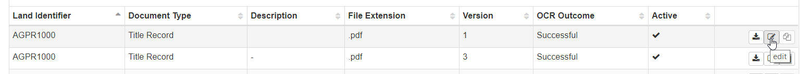
- Users can add or remove keywords in the ‘Keywords’ comments field.
- Click the ‘Save’ button and a confirmation message of the update will appear on the screen.
- Click ‘Cancel’ to return the previous screen.
How to upload a document
Users can upload a variety of documents relevant to a property and the land parcels associated with that property.
To upload a document:
- Ensure the document is classified to ‘OFFICIAL’ and has been scanned by an approved antivirus program.
- Search for the relevant property that the land parcel is associated with for which you wish to upload a document.
- Click on the ‘edit’ button of the property record. This will take you to a page with the details of the property and a list of the land parcels associated with the property.
- Scroll down to the bottom of the page and identify the land parcel relevant to the document you wish to upload. Click on the ‘edit’ button.
- Continue scrolling to the bottom of the page where the document section is located. Click on the ‘Upload Document’ button.
- Select the document type from the drop down list. If the document type is of type ‘Other’ you will be required to enter a description of the document in 20 characters or less. For a document of type ‘Other’ to be uploaded as a new version of an already uploaded document, their description fields must be identical.
- Click on ‘Choose File’ to select the document you wish to upload from your computer.
- Enter any keywords that describe the document that you are uploading. These keywords can be used to search for this document once uploaded.
- When finished, click the ‘Upload’ button. A confirmation message of the upload will appear on the screen if the document was successfully uploaded.
- Click ‘Cancel’ to return to the previous screen. A record of the uploaded document will now appear in the document section of the page.
- If a new version of an existing document is being uploaded, the previous version will automatically be archived.
How to archive a document:
Although existing documents are automatically archived upon the upload of a newer, users have the option to directly archive a document through the UI.
To archive a document:
- Locate the document you wish archive and click the ‘archive’ button.
- A confirmation popup will prompt you to confirm this action. Click the ‘OK’ button to archive the document.
- A confirmation message will appear on the screen if the document was successfully archived.
- Confirm the document has been archived by verifying there is now an x under the active column for that document.
To view an archived document click the ‘versions (toggle)’ button. This will display all previous versions of the selected document.
For a record of all archived documents related to a particular land parcel, click the ‘No’ option in the ‘Active?’ toggle and then click the ‘Search’ button. All archived documents will be displayed. Alternatively, selecting the ‘All’ option on the toggle will display a record of all active and archived documents.
Property Marketplace
Property Marketplace consists of Surplus Land and Available Office Space. Surplus Land is where a user can view land parcels that have been flagged as having surplus land. On the other hand, Available Office Space is where users can search for buildings that have advertisements listed for available office space.
Surplus Land
- To view land parcels flagged as surplus land
- Navigate to the AGPR home page and click on the ‘Property Marketplace’ tile.
- Click on the ‘Surplus Land’ tile.
- To view a specific land parcel, a variety of filters are available to the user. These include ‘Location’, in which a user can filter ads by using a building’s full address or any element of that address (street number, street name, postcode, state). Additionally, users can specify a range of hectares to further filter the ads listed. Users can also filter out land parcels depending on their Contamination Risk status, Ecological Value, Heritage Status and whether any Native Title Claims exist.
Available Office Space
A video on how to create and edit an ad for Available Office Space can be viewed here
A video on how to view ads for Available Office Space can be viewed here
- To create an ad:
- Enter into Leased Estate from the Home Page of the AGPR and click on the ‘Leases’ Tab.
- Search for the building that you wish to place an ad for available office space on.
- Click on the Edit Button
- Click on the ‘Office Space Advertisements’ tab.
- Click on the ‘New Advertisement’ Button.
- Enter the required information relating to your advertisement and click ‘Save’, otherwise click ‘Cancel’ to return to the ‘Office Space Advertisement’ tab.
- To edit an ad:
- In the ‘Office Space Advertisements’ tab in Leased Estate, the list of ads for available office space will be displayed. Browse for the ad that you wish to edit.
- You can sort the list of ads via columns such as ‘Publish Date’ or ‘Contact person’ by clicking on the arrows within the column headers.
- Click on the edit button of the ad you wish to edit
- After making the desired changes, click on the ‘Save’ button. If you make changes that you do not wish to save, then click on the ‘Cancel’ button.
- To view an ad:
- All ads for available office space will appear in Property Marketplace. To view these ads, return to the AGPR home page and click on the ‘Property Marketplace’ tile.
- Click on the ‘Available Office Space’ tile.
- To view a specific ad, a variety of filters are available to the user. These include ‘Location’, in which a user can filter ads by using a building’s full address or any element of that address (street number, street name, postcode, state). Additionally, users can specify a range of available work points or meters squared to further filter the ads listed. ‘Status’ can also be used to filter out ads that have been now filled and those that are currently available.
Administrators User Guide
If you are a AGPR administrator, you will see an additional 'Administration' icon on the banner, next to the 'Data management' icon. You can access all administration functions by clicking on the down arrow next to Administration.
Agencies
A video on how to search for and edit an agency can be viewed here
A video on how to add an agency can be viewed here
A video on how to view the buildings associated with an agency can be viewed here
The Agencies section allows administrators to add, edit and delete agencies. You can also use this section to access a list of all buildings for a particular agency.
- To find an agency:
- Enter a set of agency details in the search bar - you can enter any combination of name, ABN and active status.
- Click the 'Search' button.
- To add an agency:
- Click on the 'New Agency' button.
- Enter a name, type, ABN and active status for the agency.
- Click on the 'Save' button.
- You should see a green pop-up box with a confirmation message.
- To edit an agency:
- Find the agency you wish to edit. You can either search for an agency or browse through the list.
- Click on the edit button
- Make the required changes to the agency details.
- Click on the 'Save' button.
- You should see a green pop-up box with a confirmation message.
- To delete an agency:
- Find the agency you wish to delete. You can either Search for an agency or browse through the list.
- Click on the delete button
- You will see a deletion confirmation, click on OK to confirm the deletion of the portfolio.
- You should see a green pop-up box with a confirmation message.
- To access a list of all buildings for an agency:
- Find the agency you wish to access the building records for. You can either Search for an agency or browse through the list.
- Click on the grid button
- You will be redirected to the building tab where you will see a list of all buildings for the selected agency.
Buildings
A video on how to search for and edit a building can be viewed here
A video on how to add a building can be viewed here
The Buildings section allows administrators to add, edit and delete buildings.
- To find a building:
- Enter a set of building details in the search bar - you can enter keywords to search on ID, street address, suburb, state/territory as well as active status.
- Click the 'Search' button. A list of buildings matching your search criteria will be displayed.
- To edit a building:
- Find the building you wish to edit. You can either search for a building or browse through the list.
- Click on the edit button
- Make the required changes to the building details.
- Click on the 'Save' button.
- You should see a green pop-up box with a confirmation message.
- To delete a building:
- Find the building you wish to delete. You can either Search for a building or browse through the list.
- Click on the delete button
- You will see a deletion confirmation, click on OK to confirm the deletion of the portfolio.
- You should see a green pop-up box with a confirmation message.
- To access a list of previous AGPR collections for an agency:
- Find the Agency to access the leased estate collections for. You can either search for an agency or browse through the list.
- Click on the view button
- You will be redirected to the details tab where you will see the details of the selected agency. Select the 'Data collections' on the left of the details tab.
- Here you will find all the leased estate collections for the selected agency. To view a specific collection, click the view button
Collection Cycles
A video on how to add and edit a collection cycle can be viewed here
A video on how to search for and delete a collection cycle can be viewed here
A video on how to roll a data collection can be viewed here
The Collection cycle section allows administrators to add, edit and delete collection cycles.
- To find a collection cycle:
- Enter a set of collection cycle details - you can search on any combination of start and end dates, type, MOG change and active status.
- Click the 'Search' button. A list of collection cycles matching your search criteria should be displayed.
- To add a collection cycle:
- Click on the 'New Record' button.
- Enter start and end dates, type, MOG change and active status for the collection cycle.
- Note:If you are adding a collection cycle for the current period, you should see a second tab labelled 'Roll data collection' in the top-left section of your screen. Additional instructions on how to roll the data collection records from the previous collection cycle to this new collection cycle can be found in the next section.
- Click on the 'Save' button.
- You should see a green pop-up box with a confirmation message.
-
To roll a data collection:
When you add a new collection cycle, you may wish to roll the data collection records over to the new collection cycle. When performing this function, it is important to note the following:- The collection cycle must be in the current period, i.e. you cannot roll the data collection to a past or future dated collection cycle.
- It is best to ensure that all data collection records from the previous collection cycle have been completed before rolling into a new collection cycle. For example, if a lease hasn't been explicitly expired by following the instructions found under the 'Using the lease tab: to expire a lease' section as above, the system will not do this automatically and will roll these records forward to the new collection cycle, as is.
- Rolling the data collection to a new collection cycle can only be performed once. It cannot be reversed and the user will only be prompted about this once.
To perform this function:
- Click on the 'Roll data collection cycle' tab located in the top-left section of your screen.
- Read the important pop-up box about this action being irreversible.
- Click the 'Roll' button.
- You should see a green pop-up box with a confirmation message.
-
To edit a collection cycle:
- Find the collection cycle you wish to edit. You can either search for a collection cycle or browse through the list.
- Click on the edit button
- Make the required changes to the collection cycle details.
- Click on the 'Save' button.
- You should see a green pop-up box with a confirmation message.
-
To delete a collection cycle:
- Find the collection cycle you wish to delete. You can either Search for a collection cycle or browse through the list.
- Click on the delete button
- You will see a deletion confirmation, click on OK to confirm the deletion of the portfolio.
- You should see a green pop-up box with a confirmation message.
Portfolios
A video on how to search for and edit a portfolio can be viewed here
A video on how to add and delete portfolios can be viewed here
The portfolios section allows administrators to add, edit and delete portfolios.
- To find a portfolio:
- Enter a set of portfolio details in the search bar - you can enter any combination of name, sector and active status.
- Click the 'Search' button. A list of portfolios matching your search criteria should be displayed.
- To add a portfolio:
- Click on the 'New Portfolio' button.
- Enter a name, sector and active status for the portfolio.
- Click on the 'Save' button.
- You should see a green pop-up box with a confirmation message.
- To edit a portfolio:
- Find the portfolio you wish to edit. You can either search for a portfolio or browse through the list.
- Click on the edit button
- Make the required changes to the portfolios details.
- Click on the 'Save' button.
- You should see a green pop-up box with a confirmation message.
- To delete a portfolio:
- Find the portfolio you wish to delete. You can either search for a portfolio or browse through the list.
- Click on the delete button
- You will see a deletion confirmation, click on OK to confirm the deletion of the portfolio.
- You should see a green pop-up box with a confirmation message.
Agency Building Requests
A video on how to search for and respond to agency building requests can be viewed here
Users may request building additions or changes.
- Click on the ‘Administration’ tab in the top ribbon and select ‘Agency Building Requests’ in the drop down. This will take you to the Building Requests display where one can search and view all building requests.
- To find an agency building request, you can either manually search the records, or filter the requests by Agency, Request Status and processing dates.
- Once you have found the appropriate request, click on the edit button
- Under the ‘Duplicate AGPR Building Search’ section, by clicking on the ‘Search’ button you are verifying that there are no other building records at the address that exist in the AGPR.
- If a duplicate building exists, the ‘Building details’ values for that existing building will be displayed to the Administrator to compare with the data in building request. The Administrator will then verify that this information aligns with the user’s building request. If it does, then click on the ‘Link’ button to link the submitter’s agency information to the existing building record 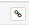
- If the existing and new ‘Building details’ values do not align, then the Administrator needs to make the decision about which data is correct and then update the related fields as required.
- Process the request, and provide your feedback in the processor comments section, if required.
- Select a ‘Request Status’ from the drop down list. If the building request is insufficient, select ‘Cancelled’. If the request requires further consideration and the Administrator intends to return back to the request, then select ‘Submitted’. Otherwise, if the building request is approved, then select ‘Processed’.
- Click the 'Save' button to save your changes.
- Provide the requestor with a confirmation email from the propertydata@finance.gov.au that the request has been processed.
Agency Exemptions
A video on how to create, edit and delete an agency exemption can be viewed here
An agency can request from Finance to be exempt from reporting some or all leased areas. If granted these exemptions are logged in the Agency Exemption section. It allows administrators to create, edit and delete agency exemptions.
To find an agency exemption:
- Select the agency’s name in the drop down ‘Agency’ menu.
- Click the ‘Search’ button.
- All exemptions that have been granted for the agency are displayed
- Click on the edit button for an exemption to view more detail
To add a new agency exemption:
- Click on the ‘New Exemption’ button.
- Select the agency’s name in the drop down ‘Agency’ menu.
- Enter a description of the exemption including details such as building or lease included, reason for exemption and exemption approval details.
- Click the ‘Save’ button.
To edit an agency exemption:
- Find the agency exemption you wish to edit. You can either search for an agency exemption or browse manually through the list.
- Click on the edit button
- Make the required changes to the agency exemption’s details.
- Click on the ‘Save’ button.
- A green pop-up box should appear with a confirmation message.
To delete an agency exemption:
- Find the agency exemption you wish to delete. You can either search for an agency exemption or browse manually through the list.
- Click on the delete button
- You will see a confirmation of the deletion. Click on the OK button to confirm.
- A green pop-up box should appear with a confirmation message.
Office Space Advertisements
A video on how to search for and delete office space advertisements can be viewed here
To delete an ad for available office space
- Enter Leased Estate from the Home Page of the AGPR and click on the ‘Leases’ Tab.
- Search for the building that you wish to review an ad for.
- Click on the Edit Button
- Click on the ‘Office Space Advertisements’ tab.
- Locate the ad that you wish to delete. You will have to browse manually through the list, but can order ads by columns such as ‘Status’ or ‘Contact Person’ by clicking on the arrows within the column headers.
- Click on the delete button
- You will see a deletion confirmation, click on OK to confirm the deletion of the ad.
- A green pop-up box will appear with a confirmation message.
Document Management
To delete a document:
- Navigate to the homepage.
- Filter records for the particular lease that relates to the document that you wish to delete.
- Click the ‘Delete' button.
User Administration
A video on how to search for and edit users can be viewed here
A video on how to add a new user can be viewed here
The user administration section can be used for adding, editing or deleting users.
To find a user:
- You can find a user by browsing through the list of all users or searching for a specific user.
- To search for a user, enter either an email or last name, or both. You can also enter part of an email or name (e.g. finance.gov.au)
- Click the search button. A list of users matching your search criteria should be displayed.
To add a user:
- To add a user, click the 'New User' button.
- You will be required to enter a first name, last name and email at a minimum.
- You can assign permissions and account management features now, or after the user has been created.
- Click 'Save' to add the user.
To edit a user:
- Find the user you wish to edit. You can either search for a user or browse through the list of all users.
- Click on the edit button
- Make the required changes to the user details, permissions, and account management features.
- Click on the 'Save' button to save your change or 'Cancel' to discard them.
- You should see a green pop-up box with a confirmation message.
To delete a user:
- Find the user you wish to delete. You can either search for a user or browse through the list of all users.
- Click on the delete button
- You will see a deletion confirmation, click on OK to confirm the deletion of the user.
- You should see a green pop-up box with a confirmation message.
Data Management Link (Power BI/Excel download)
An additional Data Exchange link is provided under the Data management link.
By clicking on the link and using the drop down, an Administrator can download a complete agency leased estate data set into Excel by collection period.